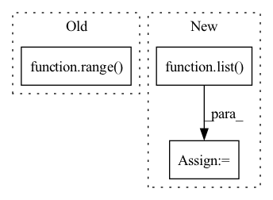

Pattern ID :2084
Before Change
self.layers = nn.ModuleList([])
for level, heads, (dim_in, dim_out), block_repeat in zip(reversed(range( num_heirarchies) ), layer_heads, dim_pairs, block_repeats):
is_last = level == 0
depth = block_repeat
After Change
blocks = 2 ** (num_heirarchies - 1)
seq_len = (fmap_size // blocks) ** 2 // sequence length is held constant across heirarchy
heirarchies = list( reversed(range(num_heirarchies)))
mults = [2 ** i for i in heirarchies]
layer_heads = list(map(lambda t: t * heads, mults))
layer_dims = list(map(lambda t: t * dim, mults))In pattern: SUPERPATTERN
Frequency: 3
Non-data size: 3
Instances Fragment ID: 5041846
Project Name: lucidrains/vit-pytorch
Commit Name: 17cb8976df34ae0f629c00fa4daa733e778e3f57
Time: 2021-05-27
Author: lucidrains@gmail.com
File Name: vit_pytorch/nest.py
M Class Name: NesT
N Class Name: NesT
M Method Name: __init__(1)
N Method Name: __init__(1)
M Parent Class: nn.Module
N Parent Class: nn.Module
M File Name: vit_pytorch/nest.py
N File Name: vit_pytorch/nest.py
M Start Line: 132
M End Line: 149
N Start Line: 132
N End Line: 150
Before Change
relative_variational_blocks = list()
for example_feature in reversed(example_features[:-1]):
for group_index in range( 2) :
print("previous.shape:", previous.shape)
print("example_feature.shape:", example_feature.shape)
relative_variational_block = RelativeVariationalBlock(After Change
level_sizes, reversed(example_features)
)):
print("level_index:", level_index)
inner_blocks = list()
for block_index in range(
1 if level_index == 0 else 0, level_size
):
print("block_index:", block_index) Fragment ID: 5041842
Project Name: aiwizo/template-nvae
Commit Name: e5080ae27b935dfabc3edcc93b1529e2211a5c63
Time: 2020-08-31
Author: samedii@gmail.com
File Name: vae/architecture/decoder.py
M Class Name: DecoderNVAE
N Class Name: DecoderNVAE
M Method Name: __init__(4)
N Method Name: __init__(3)
M Parent Class: nn.Module
N Parent Class: nn.Module
M File Name: vae/architecture/decoder.py
N File Name: vae/architecture/decoder.py
M Start Line: 122
M End Line: 132
N Start Line: 115
N End Line: 148
Before Change
Attn = ProbAttention if attn=="prob" else FullAttention
// Encoder
stacks = list(range( e_layers, 1, -1) ) // you can customize here
encoders = [
Encoder(
[After Change
Attn = ProbAttention if attn=="prob" else FullAttention
// Encoder
stacks = list( range(e_layers, 2, -1)) // you can customize here
encoders = [
Encoder(
[ Fragment ID: 5041843
Project Name: zhouhaoyi/informer2020
Commit Name: f55a50eec7349931e9482515d1217bb8417b0158
Time: 2021-02-19
Author: 1095715895@qq.com
File Name: models/model.py
M Class Name: InformerStack
N Class Name: InformerStack
M Method Name: __init__(21)
N Method Name: __init__(19)
M Parent Class: nn.Module
N Parent Class: nn.Module
M File Name: models/model.py
N File Name: models/model.py
M Start Line: 95
M End Line: 112
N Start Line: 88
N End Line: 119